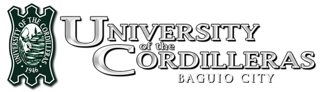

<!DOCTYPE html>
<html lang="en">

<head>
  <meta charset="utf-8">
  <meta content="width=device-width, initial-scale=1.0" name="viewport">

  <title>History @UC</title>
  <meta content="" name="description">
  <meta content="" name="keywords">

  <!-- Favicons -->
  <link href="assets/img/favicon.ico" rel="icon">
  <link href="assets/img/apple-touch-icon.png" rel="apple-touch-icon">

  <!-- Google Fonts -->
  <link href="https://fonts.googleapis.com/css?family=Open+Sans:300,300i,400,400i,600,600i,700,700i|Raleway:300,300i,400,400i,500,500i,600,600i,700,700i|Poppins:300,300i,400,400i,500,500i,600,600i,700,700i" rel="stylesheet">

  <!-- Vendor CSS Files -->
  <link href="assets/vendor/animate.css/animate.min.css" rel="stylesheet">
  <link href="assets/vendor/bootstrap/css/bootstrap.min.css" rel="stylesheet">
  <link href="assets/vendor/bootstrap-icons/bootstrap-icons.css" rel="stylesheet">
  <link href="assets/vendor/boxicons/css/boxicons.min.css" rel="stylesheet">
  <link href="assets/vendor/glightbox/css/glightbox.min.css" rel="stylesheet">
  <link href="assets/vendor/remixicon/remixicon.css" rel="stylesheet">
  <link href="assets/vendor/swiper/swiper-bundle.min.css" rel="stylesheet">

  <!-- Template Main CSS File -->
  <link href="assets/css/style.css" rel="stylesheet">

  <!-- =======================================================
  * Template Name: Sailor - v4.7.0
  * Template URL: https://bootstrapmade.com/sailor-free-bootstrap-theme/
  * Author: BootstrapMade.com
  * License: https://bootstrapmade.com/license/
  ======================================================== -->
</head>

<body>

  <!-- ======= Header ======= -->
  <header id="header" class="fixed-top d-flex align-items-center">
    <div class="container d-flex align-items-center">
      <!--UC logo-->
      <a href="index.html" class="logo me-auto"></a>

      <nav id="navbar" class="navbar">
        <ul>
          <li class="dropdown"><a href="#"><span>About</span> <i class="bi bi-chevron-down"></i></a>
            <ul>
              <li><a href="history.html">History</a></li>
              <li><a href="history.html#founders">Founders</a></li>
              <li><a href="board-of-trustees.html">Board of Trustees</a></li>
              <li><a href="organization.html">Organizational Structure</a></li>
              <li><a href="campus.html">Campus</a></li>
              <li><a href="contact.html">Contact Us</a></li>
            </ul>
          </li>
          <li class="dropdown"><a href="#"><span>Admissions</span> <i class="bi bi-chevron-down"></i></a>
            <ul>
              <li><a href="admission-enrollment/gs-jhs.html">Grade School and Junior High School</a></li>
              <li><a href="admission-enrollment/shs.html">Senior High School</a></li>
              <li><a href="admission-enrollment/ugp.html">Undergraduate Programs</a></li>
              <li><a href="admission-enrollment/gp.html">Graduate Programs</a></li>
              <li><a href="admission-enrollment/jd.html">Juris Doctor</a></li>
              <li><a href="admission-enrollment/international.html">International Students</a></li>
            </ul>
          </li>
          <li class="dropdown"><a href="#"><span>Academics</span> <i class="bi bi-chevron-down"></i></a>
            <ul>
              <li class="dropdown"><a href="#"><span>Integrated School</span> <i class="bi bi-chevron-right"></i></a>
                <ul>
                  <li><a href="integrated-school/gs-jhs.html">Grade School & Junior High School</a></li>
                  <li><a href="integrated-school/shs.html">Senior High School</a></li>
                </ul>
              </li>
              <li class="dropdown"><a href="#"><span>Undergraduate & Graduate Program</span> <i class="bi bi-chevron-right"></i></a>
                <ul>
                  <li><a href="college/accountancy.html">Accountancy</a></li>
                  <li><a href="college/arts-and-science.html">Arts & Science</a></li>
                  <li><a href="college/business-administration.html">Business Administration</a></li>
                  <li><a href="college/criminal-justice-education.html">Criminal Justice Education</a></li>
                  <li><a href="college/engineering-and-architecture.html">Engineering & Architecture</a></li>
                  <li><a href="college/hospitality-and-tourism-management.html">Hospitality & Tourism Management</a></li>
                  <li><a href="college/information-technology-and-computer-science.html">Information Technology & Computer Science</a></li>
                  <li><a href="college/law.html">Law</a></li>
                  <li><a href="college/nursing.html">Nursing</a></li>
                  <li><a href="college/teacher-education.html">Teacher Education</a></li>
                </ul>
              </li>
              <hr class="my-6">
              <li><a href="eteeap.html">ETEEAP</a></li>
            </ul>
          </li>
          <li><a href="research.html">Research</a></li>
          <li><a href="international.html">International</a></li>
          <li class="dropdown"><a href="#"><span>Alumni</span> <i class="bi bi-chevron-down"></i></a>
            <ul>
              <li><a href="alumni/uc-stalwart.html">UC Stalwart</a></li>
              <li><a href="alumni/tatak-uc.html">Tatak UC</a></li>
              <li><a href="alumni/tatak-jaguar.html">Tatak Jaguar</a></li>
              <hr class="my-6">
              <li><a href="alumni/alumni-affairs-office.html">Alumni Affairs Office</a></li>
              <li><a href="alumni/alumni-affairs-office.html#tracer">Alumni Tracer</a></li>
            </ul>
          </li>
          <li class="dropdown"><a href="#"><span>Life @UC</span> <i class="bi bi-chevron-down"></i></a>
            <ul>
              <li class="dropdown"><a href="#"><span>Community Engagements</span> <i class="bi bi-chevron-right"></i></a>
                <ul>
                  <li><a href="center-for-social-responsibility-office.html">Center for Social Responsibility Office</a></li>
                  <li><a href="project-helen.html">Project Helen</a></li>
                  <li><a href="outreach-programs.html">Outreach Programs</a></li>
                </ul>
              </li>
              <li class="dropdown"><a href="#"><span>Student Sevices</span> <i class="bi bi-chevron-right"></i></a>
                <ul>
                  <li><a href="student-services/career-center.html">Career Center</a></li>
                  <li><a href="student-services/center-for-creative-productions.html">Center for Creative Productions</a></li>
                  <li><a href="student-services/guidance-and-counseling.html">Guidance and Counseling</a></li>
                  <li><a href="student-services/legal-aid-clinic.html">Legal Aid Clinic</a></li>
                  <li><a href="student-services/libraries.html">Libraries</a></li>
                  <li><a href="student-services/registrar.html">Registrar</a></li>
                  <li><a href="student-services/sports-development-office.html">Sports Development Office</a></li>
                  <li><a href="student-services/student-welfare-and-development.html">Student Welfare & Development</a></li>
                  <li><a href="student-services/student-welfare-services.html">Student Welfare Services</a></li>
                </ul>
              <hr class="my-6">
              <li><a href="career-opportunities.html">Join Us!</a></li>
          </li>
        </ul>
        <i class="bi bi-list mobile-nav-toggle"></i>
      </nav><!-- .navbar -->

    </div>
  </header><!-- End Header -->

  <main id="main">

    <!-- ======= Breadcrumbs ======= -->
    <section id="breadcrumbs" class="breadcrumbs">
      <div class="container">

        <div class="d-flex justify-content-between align-items-center">
          <h2>History of University of the Cordilleras</h2>
        </div>

      </div>
    </section><!-- End Breadcrumbs -->

    <!-- ======= Blog Single Section ======= -->
    <section id="blog" class="blog">
      <div class="container" data-aos="fade-up">

        <div class="row">

          <div class="col-lg-9 entries">

            <article class="entry entry-single">

              <div class="entry-content">
              	<div class="container">
			      <div class="black-bg row">
			        <div class="col-12">
			          <iframe class="video" src="https://www.youtube.com/embed/h9NQUqipr-s" title="UC History" allow="accelerometer; autoplay; clipboard-write; encrypted-media; gyroscope; picture-in-picture" allowfullscreen></iframe>
			        </div>
			      </div>
			    </div>
                <p id="about">
                  Baguio Colleges, as the University of the Cordilleras was earlier known, pioneered in tertiary education in the mountain highlands of the Cordillera region amidst devastation in and around Baguio City after the Second World War.
                </p>
                <p>
                  Despite a pessimistic outlook and the bleak prospects pervading the climate of any undertaking at that time, Atty. Benjamin R. Salvosa envisioned Baguio City as a university town. With such vision, he undauntedly pursued a noble mission by founding a college.
                </p>
                
                <p>
                	It was on June 19, 1946, coinciding with the birth anniversary of Dr. Jose P. Rizal, that a historic event unfolded. Baguio Colleges was established initially offering courses in teacher training and liberal arts, with the first batch of enrollees consisting of 156 students. Classes were first held in rented spaces at the Antipolo building, and later, at the Lopez and Lamping buildings along Session Road, the city's main thoroughfare.
                </p>
                <p>
                	1966 became a turning point for Baguio Colleges as it was converted into an educational foundation. Since then, it has blazed new trails and has become more responsive to the needs of the time.
                </p>
                <p>
                	The founder, Atty. Benjamin R. Salvosa sat as the Chairman of the Board of Trustees and held the reins of the presidency up to the early part of 1994.
                </p>
                <p>
                	Through the years, the University of the Cordilleras has grown bigger through the offering of additional courses and increasing student enrollment. It continues to grow even better with time, as evidenced by exemplary performance in various fields of discipline, with its graduates shining in national licensure examinations, and its alumni doing well in private employment, in the practice of their trade and profession, and in public service.
                </p>
                
                <p>
                	Today, the University of the Cordilleras caters to more than 18,000 students coming from the Cordillera Administrative Region (CAR), Regions I and II, neighboring provinces of Luzon. In addition, UC has the largest population of international students among HEIs in Baguio City represented by 37 nationalities. Programs offered now range from basic education to graduate studies, law, arts and sciences, business and accountancy, nursing, teacher education, information technology and computer science, hospitality and tourism, and criminal justice.
                </p>
                <p>
                	UC has received recognitions which are testaments to its delivery of quality educational services. In 2019, UC's was hailed ISO 9001:2015 Certified. The Commission on Higher Education has granted UC the Autonomous University Status. The commission has likewise identified three (3) Centers of Excellence in UC namely Information Technology, Criminology, and Teacher Education. The University's College of Law is rated among the top law schools in the country, notably having graduated two (2) Bar Examination First Placers. Additionally, over 20 programs have been accredited by private accrediting bodies.
                </p>
                <p>
                	The University of the Cordilleras is blessed to serve these mountain highlands.
                </p>

                <h2 class="entry-title" id="founders">Founders of the University</h2>
                
                <h2 class="entry-title">Profile of the Founders</h2>
                <h4 id="ben">Benjamin Salvosa</h4>
                <ul style="list-style-type: circle;">
               		<li>Date of Birth : 19 April 1913</li>
                	<li>Place of Birth : Unisan, Quezon</li>
                	<li>Fulbright Lecturer to six (6) American Universities, under a Fulbright Grant, 1951-1952.
                		<ul>
                			<li>University of California at Berkeley;</li>
                			<li>University of Chicago;</li>
                			<li>Catholic University of America;</li>
                			<li>Fordham University;</li>
                			<li>University of Maryland;</li>
                			<li>University of Florida.</li>
                		</ul>
                	</li>
                	<li>Smith-Mundt Research Fellow on Philippine-American Relations,
                		<ul>
                			<li>Library of Congress, Washington D.C. 1951.</li>
                		</ul>
                	</li>
                	<li>“Parents of the Year”,
                		<ul>
                			<li>University of the Philippines-Baguio; 1967.</li>
                		</ul>
                	</li>
                	<li>“Father of Higher Education”,</li>
                	<li>Quezon ‘Medalya ng Karangalan’;
                		<ul>
                			<li>Posthumous Award by the Province of Quezon, August 19, 2003.</li>
                		</ul>
                	</li>
                	<li>Posthumous Award, the Baguio Correspondents and Broadcasters Club, Inc. ‘for his advocacy of the Journalist’s Code of Ethics.’ September 6, 2007.</li>
                	<li>Senior Law Student, UP, 1935-1936;
                		<ul>
                			<li>Editor of the “Philippinensian”;</li>
                			<li>Chancellor of the Philippine Barristers;</li>
                			<li>President of the UP Debating-Oratorical Club; and</li>
                			<li>Captain of the UP Debating Team that undertook a nationwide tour on “American Parity Rights”.</li>
                		</ul>
                	</li>
                	<li>Chairman and General Manager, The Philippine Coconut Administration (PHILCOA), 1954 to 1958, appointed by the late President Ramon Magsaysay.</li>
                	<li>Chairman, First International Coconut Conference, sponsored by the Republic of the Philippines, Manila, 1955;</li>
                	<li>Chairman, First International Coconut Conference, sponsored by the Republic of the Philippines, Manila, 1955;</li>
                	<li>Chief-of-Mission, Philippine Delegation, FAO Study Group, Rome,1957; </li>
                	<li>Consultant, Economic Commision on Asia and the Far East (ECAFE), 1962;</li>
                	<li>Consultant, Philippine Mission to Washington D.C. to remove RP-US Trade and Trariff barriers, 1964;</li>
                	<li>Consultant, First Philippine Trade Mission to Socialist Countries, Moscow, Prague, Warsaw, Bonn, 1967;</li>
                	<li>Secretary- Treasurer, National Coconut Corporation, 1940-42;</li>
                	<li>Member, Board of Directors, National Development Corporation, 1952-54.</li>
                	<li>Trustee, World University System, 1970.</li>
                	<li>Delegate, International Convention of Essayists, Novelists & Poets (PEN);</li>
                	<li>Trustee, World Constitution & Parliament Association, Denver, Colorado, 1970</li>
                	<li>Legal Counsel to 14 Mining Companies, Manila, 1940</li>
                	<li>Published Books :
                		<ul>
                			<li>“Education for Freedom”, 1974;</li>
                			<li>“Reform or Revolution”, 1971;</li>
                			<li>“Trial Technique”,</li>
                			<li>“Proof of Facts”,</li>
                			<li>“Rules of Court on Civic Actions, Criminal Procedure, Evidence and Special Proceedings”, 1940.</li>
                			<li>“The Gold Ore”, Community Newsweekly, Baguio City, 1979 to 1994.</li>
                		</ul>
                	</li>
                	<li>Publisher & Editor : 
                		<ul>
                			<li>“The Philippine-American Magazine”, Manila, 1945-46; </li>
                			<li>“Commerce”, Official Organ of the Philippine Chamber of Commerce, Manila, 1945-46;</li>
                		</ul>
                	</li>
                	<li>Columnist & Writer :
                		<ul>
                			<li>“Educationally Yours”, Baguio Midland Courier, 1946-47;</li>
                			<li>Contributing Writer, The Manila Chronicle, 1954;</li>
                			<li>“By and Large”, The Manila Times, 1955;</li>
                			<li>“Footnotes”, The Baguio Mountain Sentinel, 1964-72;</li>
                			<li>“The Permanent Revolution”, Baguio Midland Courier, 1964-72;</li>
                			<li>“Between the Lines”, “The Baguio Mountaineer”,</li>
                			<li>“The Turning Point”,</li>
                			<li>The Gold Ore, 1974- 1994</li>
                		</ul>
                	</li>
                	<li>Member, Rizal Center Fraternity, UP, 1936</li>
                	<li>Chairman, Baguio YMCA, 1947</li>
                	<li>President, Rotary Club of Baguio, 1950</li>
                	<li>Member of the Founding Board, Patria de Baguio, 1950</li>
                	<li>President, Lawyers League of Baguio, 1951</li>
                	<li>Honorary Member, National Press Club</li>
                	<li>Trustee, Fullbright Scholars of the Philippines, 1977</li>
                	<li>Bachelor of Laws (Ll.B.), 1936, University of the Philippines</li>
                	<li>Tayabas Provincial High School, 1932</li>
                	<li>Unisan Elementary School, 1926</li>
                </ul>
                <h4 id="evan">Evangelina Salvosa</h4>
                <p>To mark the 100th anniversary of the Co-Founder of the University, Evangelina D. Salvosa, UC formally named the UC College of Nursing Building as the EDS Building on 12 July 2010.</p>
                <p>This is to honor the enduring contribution of Evangelina D. Salvosa in the evolution of the University as a beacon of higher education in these mountain highlands of the Cordillera.</p>
                <p>Evangelina D. Salvosa is a 1932 graduate of University of the Philippines, Philippine General Hospital, School of Nursing, having completed the 4-year Graduate Nursing (G.N.) program of the UPPGH. EDS subsequently passed the state licensure examinations for Nurses and started her practice of Nursing at the Philippine General Hospital. EDS then moved on to become Head Nurse at the Cebu General Hospital.</p>
                <p>The qualities of professional practicing nurses are usually universally underestimated. But parallel to their low, almost invisible profile, practicing nurses keep a keen, constant eye on sanitation, and are in a perpetual state of readiness to provide the logistics and remedial measures in emergencies and contingencies. The impact of EDS at UC is manifested in two distinctly nursing ways : 1.) the ‘in-depth,’ ‘spic-and-span’ cleanliness of the university premises, from the topdown, from floor-to-ceiling ; and 2.) in the prevailing mindset of its top management team, to remain steady, in control, organized and ready-to-act during times of crisis.</p>
                <p>A woman of mature and serene equanimity, who, in her hallmark quiet composure, loomed as a rock of stability and swayed the university community in the same magnitude as UC’s Founder, BRS.</p>

                <h2 class="entry-title" id="philosophy">Founder's Philosophy</h2>
                
                

                <h2 class="entry-title" id="evo">The Evolution and the Character of The University of the Cordilleras</h2>
                <p>The City of Baguio has grown, developed and blossomed into a notable regional center of education of the country, --- from its charter date as a city in September 9, 1909, --- up to today, 112 years later.</p>
                <p>The University of the Cordilleras has evolved into an institution that is vibrant, significant, and relevant to the life and times of the nation; --- from its founding date of June 19, 1946, --- up to today, its 75th school year.</p>
                <p>Having logged 75 school years as an institution of higher learning, UC remains ever grateful to its home, the City of Baguio and to the Cordillera region.</p>
                <p>UC is indeed privileged to serve the nation as a beacon of higher education, blessedly situated in a mountain highlands setting; --- Baguio City, in the heart of the Cordillera region.</p>
                <p>Indeed, a day does not go in UC without serving a cue to its university community --- of the institutional calling --- ‘to serve and to give back,’ --- in terms of university resources and outreach, --- to its home community and region --- the City of Baguio and the Cordillera.</p>
                <h5><u>This is Who We Are</u></h5>
                <p>“To Serve” and “To Give Back” constitutes the “DNA,” or the genetic imprint of the University of the Cordilleras.</p>
                <p>The source of these “genes” can be traced to the enduring vision and legacy of the Founders of UC. In investing assets in Baguio Colleges Inc. in 1946, UC’s Founders deemed it then as high honor, their being granted the privilege of educating the youth of the land. Thus, as an embodiment of the honor and respect that they held in having been entrusted with such privilege, --- they committed the original capital they invested in the school as a permanent investment; subsequently allocating for the benefit of the institution, all the earnings thereon.</p>
                <p>Thus in 1967, at the 21st school year of the institution, UC’s Founders substantiated their intentions to consider the school as beyond proprietary interests. They initiated a re-organization of Baguio Colleges Inc. They formed in its place, a Foundation. They then donated their corporate and personal assets to the Baguio Colleges Foundation, the entity which has evolved into the University of the Cordilleras of today.</p>
                <p>In effect, UC’s Founders decided, willfully and voluntarily, “to give it all back,” unconditionally and in perpetuity. This they executed by signing an irrevocable deed of donation. In doing so, UC’s founders transformed the trajectory of the institution.</p>
                <h5><u>Nothing Taken Out; Every Resource Reinvested</u></h5>
                <p>This is the vision and the legacy that governs UC today: Each school year, UC invests and continues to re-invest all its revenue and earnings back to the institution and its pursuit of its core mission.</p>
                <p>As a consequence of this initiative by its Founders, UC took on the character of an organization that conducts its business without the pressure of serving the interests of shareholders or the “bottom line.”</p>
                <p>Having statutorily relinquished ownership, UC’s founders unleashed the energy and resources of the organization solely towards the upgrading of university standards. The intent is that --- this “game plan” would ensure an unerring path towards excellence, fueled by the deployment of the university’s resources bearing down fully on the university’s academic degree, research and community extension programs.</p>
                <p>Having voluntarily relinquished the ownership benefits thereon, the fruit of corporate operations, thus, would gravitate and inure, as a natural consequence, to its core mission of opening platforms of educational opportunity to the university constituency --- i.e., the students, the faculty, the staff, the parents, the alumni and ultimately, --- the city and the region; --- and the nation and society in general.</p>
                <p>The management successors of UC’s Founders therefore, while inheriting corporate control over the university, have thus been transformed from their traditional role of shareholders to that of faithful stewards of UC’s vision of the application of altruism towards its educational mission.</p>
                <p>Today, UC strives to shun any semblance of becoming “an ivory tower”; isolated and oblivious to the concerns and conditions of its country, its home community and region.</p>
                <h5><u>Our Intentions</u></h5>
                <p>Upon the altruistic platform forged by the founder’s intentions hereon, we intend to substantiate their vision and legacy in concrete terms: through human development projects, specific and general, conducted within the span of operations of the school.</p>
                <p>This we commit and pledge, with deep humility; and also, with an abiding respect for the indomitable spirit of the proud people of these mountain highlands, acknowledging our obligation to foster intrinsic Cordillera culture and traditions. We dutifully manifest this commitment in the setting of these commencement exercises being held today.</p>
                <h5><u>A Noble Privilege</u></h5>
                <p>In faithfulness to the intentions of the Founders of UC, we hereby duly guarantee, by our conduct and actions, to continue to provide diverse and significant opportunities for the youth of the land.</p>
                <p style="text-align: center;">On behalf of the entire University Community:</p>
                
                
                <h2 class="entry-title" id="tribute">Tribute to the Founders</h2>
                <p>This is to pay tribute to the Founders and their legacy in the establishment of the University of the Cordilleras as first higher education institution in Baguio City which is now in its 75th year of rearing and forming professionals.</p>
                <iframe class="video" src="https://www.youtube.com/embed/9oaYntsb7wc" title="A Tribute" allow="accelerometer; autoplay; clipboard-write; encrypted-media; gyroscope; picture-in-picture" allowfullscreen></iframe>

              </div>
            </article><!-- End blog entry -->

          </div><!-- End blog entries list -->

          <div class="col-lg-3">

            <div class="sidebar">
              <h3 class="sidebar-title">Contents</h3>
              <div class="sidebar-item categories">
                <ul>
                  <li><a href="#about">History</a></li>
                  <li><a href="#founders">Founders</a></li>
                  <li><a href="#ben">Profile of the Founders: Benjamin Salvosa</a></li>
                  <li><a href="#evan">Profile of the Founders: Evangelina Salvosa</a></li>
                  <li><a href="#philosophy">Founder's Philosophy</a></li>
                  <li><a href="#evo">The Evolution and the Character of The University of the Cordilleras</a></li>
                  <li><a href="#tribute">Tribute to the Founders</a></li>
                </ul>
              </div><!-- End sidebar categories-->

            </div><!-- End sidebar -->

          </div><!-- End blog sidebar -->

        </div>

      </div>
    </section><!-- End Blog Single Section -->

  </main><!-- End #main -->

  <!-- ======= Footer ======= -->
  <footer id="footer">
    <div class="footer-top">
      <div class="container">
        <div class="row">

          <div class="col-lg-5 col-md-6">
            <div class="footer-info">
              
              <p>
                Governor Pack Road <br>
                Baguio City 2600, PH<br><br>
                <strong>Phone:</strong> +63 74 442 3316<br>
                <strong>Fax:</strong> +63 74 442 6268<br>
                <strong>Email:</strong> email@uc-bcf.edu.ph<br>
              </p>
              <div class="social-links mt-3">
                <a href="https://twitter.com/UCJaguars" class="twitter"><i class="bx bxl-twitter"></i></a>
                <a href="https://www.facebook.com/UCjaguars" class="facebook"><i class="bx bxl-facebook"></i></a>
                <a href="https://www.youtube.com/c/UniversityoftheCordillerasUCJaguars/featured" class="youtube"><i class="bx bxl-youtube"></i></a>
              </div>
            </div>
          </div>

          <div class="col-lg-4 col-md-6 footer-links">
            <ul>
              <li><i class="bx bx-chevron-right"></i> <a href="graduate-programs.html">Graduate Programs</a></li>
              <li><i class="bx bx-chevron-right"></i> <a href="academic-colleges.html">Academic Colleges</a></li>
              <li><i class="bx bx-chevron-right"></i> <a href="iilic.html">International</a></li>
              <li><i class="bx bx-chevron-right"></i> <a href="eteeap.html">ETEEAP</a></li>
              <li><i class="bx bx-chevron-right"></i> <a href="integrated-school/shs.html">Senior High School</a></li>
              <li><i class="bx bx-chevron-right"></i> <a href="integrated-school/gs-jhs.html">Grade School & Junior High School</a></li>
              <li><i class="bx bx-chevron-right"></i> <a href="scholarship.html">Scholarship</a></li>
            </ul>
          </div>

          <div class="col-lg-3 col-md-6 footer-links">
            <ul>
              <li><i class="bx bx-chevron-right"></i> <a href="research.html">Research</a></li>
              <li><i class="bx bx-chevron-right"></i> <a href="community-engagement.html">Community</a></li>
              <li><i class="bx bx-chevron-right"></i> <a href="alumni/alumni-affairs-office.html">Alumni</a></li>
              <li><i class="bx bx-chevron-right"></i> <a href="student-services/career-center.html">Career</a></li>
              <li><i class="bx bx-chevron-right"></i> <a href="career-opportunities.html">Join Us</a></li>
              <li><i class="bx bx-chevron-right"></i> <a href="contact.html">Contact Us</a></li>
              <li><i class="bx bx-chevron-right"></i> <a href="http://legacy-www.uc-bcf.edu.ph/">Legacy Website</a></li>
            </ul>
          </div>


        </div>
      </div>
    </div>

    <div class="container">
      <div class="copyright">
        &copy; 2022 University of the Cordilleras. All Rights Reserved.
      </div>
    </div>
  </footer><!-- End Footer -->

  <a href="#" class="back-to-top d-flex align-items-center justify-content-center"><i class="bi bi-arrow-up-short"></i></a>

  <!-- Vendor JS Files -->
  <script src="assets/vendor/bootstrap/js/bootstrap.bundle.min.js"></script>
  <script src="assets/vendor/glightbox/js/glightbox.min.js"></script>
  <script src="assets/vendor/isotope-layout/isotope.pkgd.min.js"></script>
  <script src="assets/vendor/swiper/swiper-bundle.min.js"></script>
  <script src="assets/vendor/waypoints/noframework.waypoints.js"></script>
  <script src="assets/vendor/php-email-form/validate.js"></script>

  <!-- Template Main JS File -->
  <script src="assets/js/main.js"></script>

</body>

</html>